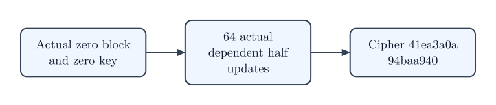
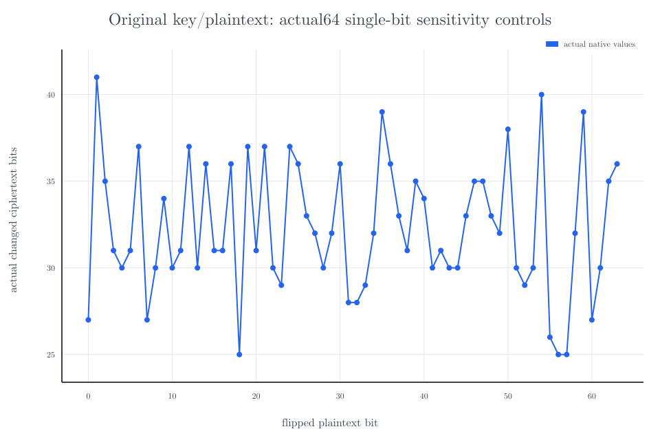
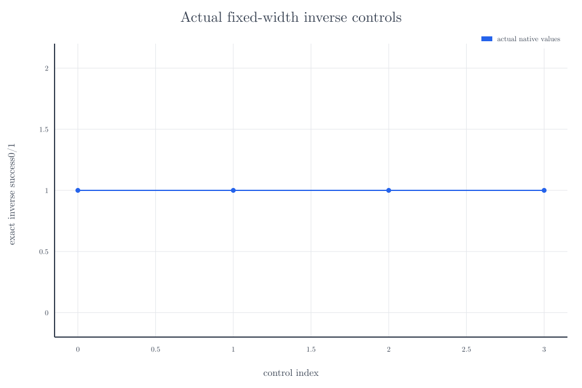
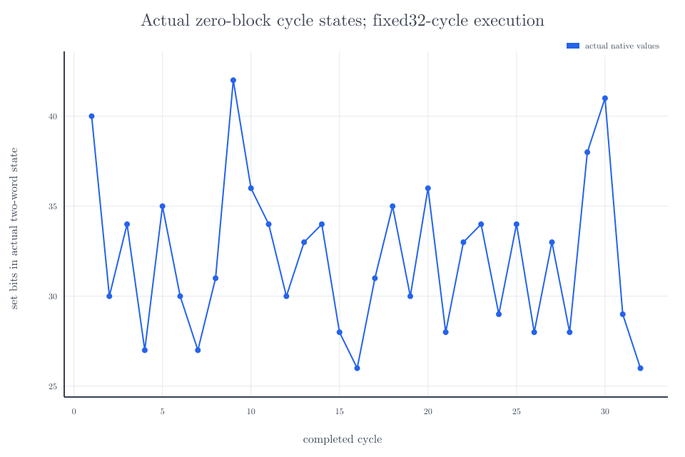

TEA: actual modular cycles, round trips and bit sensitivity
Abstract
The Tiny Encryption Algorithm mixes two32-bit words through32 dependent double rounds. Actual schedule and intermediate half words expose the mechanism; the original single-bit sensitivity experiment remains an illustrative property test.
Mechanism and mathematical scope
All additions, subtractions and left shifts are uint32 modulo2^32. Each encryption cycle increments sum by delta=0x9E3779B9, then updates left from right/key0,1 and right from the new left/key2,3. Decryption starts sum=0xC6EF3720 and reverses these dependent updates before subtracting delta. Thirty-two cycles are64 half updates. A mean near32 flipped output bits for one64-bit input cohort is illustrative diffusion, not evidence of cryptographic security. TEA has equivalent-key and related-key weaknesses; later TEA variants are distinct algorithms, not a blanket security fix.
A tiny actual producing history
The table and native concept diagram read the same producing execution. Every block below is a complete editable C++ program.
#include <dm/dm.hpp>
int main() {
namespace a = dm::algorithms;
namespace g = dm::graphics;
std::filesystem::create_directories("build");
auto r = a::tea_encrypt_trace({0, 0}, {0, 0, 0, 0});
std::print("| actual cycle | schedule hex | words before | first updated half hex | words after |\n| " "---: | --- | --- | --- | --- |\n");
for (std::size_t i = 0; i < 4; ++i) {
const auto &s = r.steps[i];
std::print("| {} | {:08x} | `{}` | {:08x} | `{}` |\n", s.cycle, s.sum,
s.before, s.first_updated, s.after);
}
std::print("Zero-block/key vector {:08x} {:08x}.\n", r.value[0], r.value[1]);
g::Diagram concept_diagram(48, 1100);
concept_diagram.node("n0", {0, 0}, "Actual zero block and zero key");
concept_diagram.node("n1", {5, 0},
std::format("{} actual dependent half updates",
r.half_updates));
concept_diagram.node("n2", {10, 0},
std::format("Cipher {:08x} {:08x}", r.value[0],
r.value[1]));
concept_diagram.edge("n0", "n1").edge("n1", "n2");
concept_diagram.save_svg("build/tea_tiny.svg");
}| actual cycle | schedule hex | words before | first updated half hex | words after |
|---|---|---|---|---|
| 1 | 9e3779b9 | [0, 0] | 9e3779b9 | [2654435769, 3689468719] |
| 2 | 3c6ef372 | [2654435769, 3689468719] | 3e3d2c81 | [1044196481, 1954025910] |
| 3 | daa66d2b | [1044196481, 1954025910] | 4979d18d | [1232720269, 644807322] |
| 4 | 78dde6e4 | [1232720269, 644807322] | 420a1097 | [1107955863, 3200624937] |
Zero-block/key vector 41ea3a0a 94baa940.

The retained original experiment
#include <dm/dm.hpp>
int main() {
namespace a = dm::algorithms;
namespace g = dm::graphics;
std::filesystem::create_directories("build");
const std::array<std::uint32_t, 4> key{0x01234567u, 0x89abcdefu,
0xfedcba98u, 0x76543210u};
const std::array<std::uint32_t, 2> pt{0xdeadbeefu, 0x01234567u};
auto r = a::tea_encrypt_run(pt, key);
auto back = a::tea_decrypt(r.value, key);
std::print("Original plaintext {:08x} {:08x}; cipher {:08x} {:08x}; exact round trip {}.\n\n| flipped " "original plaintext bit | actual ciphertext changed bits |\n| ---: | ---: |\n",
pt[0], pt[1], r.value[0], r.value[1], back == pt);
std::vector<double> x, y;
for (int bit = 0; bit < 64; ++bit) {
auto flipped = pt;
flipped[bit / 32] ^= std::uint32_t{1} << (bit % 32);
auto c = a::tea_encrypt(flipped, key);
auto count =
std::popcount(c[0] ^ r.value[0]) + std::popcount(c[1] ^ r.value[1]);
x.push_back(bit);
y.push_back(count);
std::print("| {} | {} |\n", bit, count);
}
std::print("Actual64-flip mean {}; reference for ideal random64-bit outputs32.\n",
std::accumulate(y.begin(), y.end(), 0.) / y.size());
auto plot = g::RPlot::create();
plot.lines(x, y, "actual native values", {37, 99, 235}).points(
x, y, {37, 99, 235}, 4).title("Original key/plaintext: actual64 single-bit sensitivity controls").x_label("flipped plaintext bit").y_label("actual changed ciphertext bits");
plot.save_svg("build/tea_original.svg");
}Original plaintext deadbeef 01234567; cipher f3e25016 2162a7f5; exact round trip true.
| flipped original plaintext bit | actual ciphertext changed bits |
|---|---|
| 0 | 27 |
| 1 | 41 |
| 2 | 35 |
| 3 | 31 |
| 4 | 30 |
| 5 | 31 |
| 6 | 37 |
| 7 | 27 |
| 8 | 30 |
| 9 | 34 |
| 10 | 30 |
| 11 | 31 |
| 12 | 37 |
| 13 | 30 |
| 14 | 36 |
| 15 | 31 |
| 16 | 31 |
| 17 | 36 |
| 18 | 25 |
| 19 | 37 |
| 20 | 31 |
| 21 | 37 |
| 22 | 30 |
| 23 | 29 |
| 24 | 37 |
| 25 | 36 |
| 26 | 33 |
| 27 | 32 |
| 28 | 30 |
| 29 | 32 |
| 30 | 36 |
| 31 | 28 |
| 32 | 28 |
| 33 | 29 |
| 34 | 32 |
| 35 | 39 |
| 36 | 36 |
| 37 | 33 |
| 38 | 31 |
| 39 | 35 |
| 40 | 34 |
| 41 | 30 |
| 42 | 31 |
| 43 | 30 |
| 44 | 30 |
| 45 | 33 |
| 46 | 35 |
| 47 | 35 |
| 48 | 33 |
| 49 | 32 |
| 50 | 38 |
| 51 | 30 |
| 52 | 29 |
| 53 | 30 |
| 54 | 40 |
| 55 | 26 |
| 56 | 25 |
| 57 | 25 |
| 58 | 32 |
| 59 | 39 |
| 60 | 27 |
| 61 | 30 |
| 62 | 35 |
| 63 | 36 |
Actual64-flip mean 32.28125; reference for ideal random64-bit outputs32.

Explicit controls
#include <dm/dm.hpp>
int main() {
namespace a = dm::algorithms;
namespace g = dm::graphics;
std::filesystem::create_directories("build");
std::vector<std::array<std::uint32_t, 2>> blocks{{0, 0}, {1, 0}, {0, 1},
{0xffffffffu, 0xffffffffu}};
std::vector<double> x, y;
std::print("| actual input | actual cipher | inverse restores input | cycles |\n| --- | --- | --- | " "---: |\n");
for (std::size_t i = 0; i < blocks.size(); ++i) {
auto r = a::tea_encrypt_run(blocks[i], {0, 0, 0, 0});
auto inverse = a::tea_decrypt_trace(r.value, {0, 0, 0, 0});
x.push_back(i);
y.push_back(inverse.value == blocks[i] ? 1 : 0);
std::print("| `{}` | `{}` | {} | {} |\n", blocks[i], r.value,
inverse.value == blocks[i], r.cycles);
}
auto plot = g::RPlot::create();
plot.lines(x, y, "actual native values", {37, 99, 235}).points(
x, y, {37, 99, 235}, 4).title("Actual fixed-width inverse controls").x_label("control index").y_label("exact inverse success0/1");
plot.save_svg("build/tea_controls.svg");
}| actual input | actual cipher | inverse restores input | cycles |
|---|---|---|---|
[0, 0] | [1105869322, 2495260992] | true | 32 |
[1, 0] | [2679826747, 2176578344] | true | 32 |
[0, 1] | [1094750631, 2726272050] | true | 32 |
[4294967295, 4294967295] | [4143234926, 322287032] | true | 32 |

Actual selected work and sensitivity
#include <dm/dm.hpp>
int main() {
namespace a = dm::algorithms;
namespace g = dm::graphics;
std::filesystem::create_directories("build");
auto r = a::tea_encrypt_trace({0, 0}, {0, 0, 0, 0});
std::vector<double> x, y;
std::print("| actual completed cycle | schedule word | actual left word | actual right word |\n| ---: | " "---: | ---: | ---: |\n");
for (const auto &s : r.steps) {
x.push_back(s.cycle);
y.push_back(std::popcount(s.after[0]) + std::popcount(s.after[1]));
std::print("| {} | {} | {} | {} |\n", s.cycle, s.sum, s.after[0],
s.after[1]);
}
auto plot = g::RPlot::create();
plot.lines(x, y, "actual native values", {37, 99, 235}).points(
x, y, {37, 99, 235}, 4).title("Actual zero-block cycle states; fixed32-cycle execution").x_label("completed cycle").y_label("set bits in actual two-word state");
plot.save_svg("build/tea_work.svg");
}| actual completed cycle | schedule word | actual left word | actual right word |
|---|---|---|---|
| 1 | 2654435769 | 2654435769 | 3689468719 |
| 2 | 1013904242 | 1044196481 | 1954025910 |
| 3 | 3668340011 | 1232720269 | 644807322 |
| 4 | 2027808484 | 1107955863 | 3200624937 |
| 5 | 387276957 | 2122434230 | 1027926831 |
| 6 | 3041712726 | 2780239586 | 1118048990 |
| 7 | 1401181199 | 1681097341 | 978485293 |
| 8 | 4055616968 | 3978845601 | 1163604929 |
| 9 | 2415085441 | 1879047277 | 1221504670 |
| 10 | 774553914 | 1750462393 | 1500222140 |
| 11 | 3428989683 | 437627571 | 2708043391 |
| 12 | 1788458156 | 968143387 | 3761396070 |
| 13 | 147926629 | 651965819 | 596324193 |
| 14 | 2802362398 | 437890447 | 2213769106 |
| 15 | 1161830871 | 204775620 | 374528879 |
| 16 | 3816266640 | 2827614104 | 405635203 |
| 17 | 2175735113 | 3293571472 | 525310232 |
| 18 | 535203586 | 2407902946 | 1922734027 |
| 19 | 3189639355 | 2852829034 | 1080982281 |
| 20 | 1549107828 | 1110570399 | 4294453592 |
| 21 | 4203543597 | 1160406766 | 1865451556 |
| 22 | 2563012070 | 1018191609 | 2395292124 |
| 23 | 922480543 | 1788044718 | 2595411548 |
| 24 | 3576916312 | 716321396 | 4031120251 |
| 25 | 1936384785 | 2332365723 | 984410875 |
| 26 | 295853258 | 1918476989 | 3768583229 |
| 27 | 2950289027 | 265698286 | 592257419 |
| 28 | 1309757500 | 1416379497 | 157961569 |
| 29 | 3964193269 | 3083390870 | 3868029944 |
| 30 | 2323661742 | 3602363215 | 4085707663 |
| 31 | 683130215 | 4203049705 | 2152016102 |
| 32 | 3337565984 | 1105869322 | 2495260992 |

API and interpretation
Word arrays have no implicit byte order or serialization. This primitive supplies no padding, mode, authentication or key management. Capturing the actual32-cycle history shares the same canonical encryption/decryption kernel as the compatibility functions. The original64-flip observations are retained individually rather than assigned ambiguous histogram bins.
Reusable producers, fixtures and histories live in the canonical C++ library. Captured records own their values and do not come from a separate report replay. Selected counters and record/scalar policies are specified at their API boundaries; they are not peak-byte or wall-time budgets. Synthetic structural inputs are controlled fixtures for these mechanisms.
References
Verified in the shared ten-document batch: 72 scoped native cases;20 directly
instrumented ASan/UBSan cases;82 executable public examples;327/327 definitions
across23 full scopes;10 hovers;3797 independent records/1769203 checks;frozen
valid-input comparisons across all ten families with cyclic-tree validation
correction recorded;12 checkout/installed standalone headers and linked
ten-family consumer;40 executed programs and40 inspected figures with both
exports. Receipts:
/mnt/projects/datamunge/build/mepml-conversion/batch-384-393/.